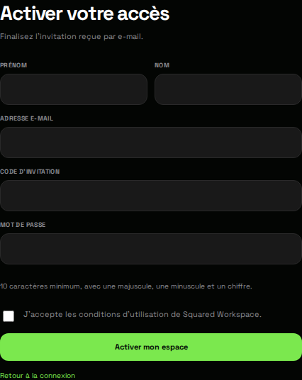

Activer mon espace Workspace
La procédure d’invitation du portail web, étape par étape, sans créer de compte en double.
Avant de commencer
Ce guide s’adresse à une personne invitée dans un espace client ou collaborateur. Ayez l’invitation, l’adresse e-mail destinataire et votre code d’invitation à portée de main. Le compte du centre d’aide est distinct : créer un compte ici ne crée pas un accès Workspace.
Vous avez déjà activé votre accès ? Passez à Me connecter à Workspace au lieu d’activer un deuxième compte.
Activer votre accès
- Ouvrez le lien de l’invitation ou le portail web Workspace. Sur la page Connexion, choisissez Activer un accès.
- Renseignez Prénom, Nom et l’Adresse e-mail qui a reçu l’invitation. Une autre adresse peut ne pas correspondre à l’accès prévu.
- Copiez votre Code d’invitation dans le champ dédié. N’envoyez jamais ce code dans le forum ou un ticket.
- Choisissez votre Mot de passe. Dans cette version du portail web, il faut au moins 10 caractères, une majuscule, une minuscule et un chiffre.
- Lisez les conditions présentées, cochez l’acceptation si vous les acceptez, puis sélectionnez Activer mon espace une seule fois.

Le résultat attendu
Lorsque le serveur accepte l’activation, le portail poursuit l’ouverture de votre espace. Vérifiez que vous retrouvez le contexte attendu. Un message d’erreur ou une attente sans fin ne constitue pas une confirmation d’activation.
Les rubriques visibles dépendent de vos autorisations. L’absence de certains outils internes n’implique pas une activation incomplète.
Invitation absente, refusée ou expirée
Vérifiez les courriers indésirables et l’adresse destinataire. Si l’invitation manque ou n’est plus valide, demandez à votre interlocuteur Squared de vérifier l’accès et de renvoyer une invitation. N’inventez pas de code et ne multipliez pas les créations de comptes.
En cas d’erreur réseau, revenez à Connexion et utilisez Vérifier la connexion au serveur. Le succès de l’installation ou du chargement de la page n’est pas une preuve de fonctionnement de l’API.
Vous êtes encore bloqué ?
Notez la date, le type d’appareil, le message exact et l’étape atteinte. Masquez le code d’invitation et l’adresse complète avant toute capture publique.
Me guider pour mon accèsProcédure vérifiée sur le code du portail web Squared Workspace du 18 septembre 2026. Les captures montrent les formulaires réels sans données personnelles. Elles ne prouvent pas la disponibilité actuelle du serveur et ne représentent pas l’interface de l’application native. Source de la procédure web.